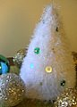
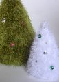

|
||
Premium Patterns Wintry Mix Mitts Love Bytes HawkeyeFree Patterns Kiddie Cadet Summerlin Ruffled Scarf Seamless DS Sock Simply Seamless Pouch Myriads of MushroomsExtras DIY Mitten Blocker Felt Patch Tutorial Yarn Dyeing Tutorial Needle Pouches Knitting Journal |
December 12, 2007 - Posted by Alice SchneblyKitschy ChristmasProject Specs Well, I have to say I was totally sucked in by the fun fur. Not that I haven’t used fun fur plenty of times for the hedgehogs, and even a flamingo, but I never truly thought I would have something made with fun fur out on display in my living room. Now I do though—two Kitschmas Trees! The moment I saw this pop up in my contacts photos on Flickr, I knew that I had to make it. I dug through my novelty yarn stash (yes, I have a novelty yarn stash, I’m quite ashamed so that’s why you haven’t seen pictures), found two skeins of olive Fun Fur and I was on my way. I didn’t have any Lion Brand Homespun, so I substituted the first green acrylic I could find—Bernat Softee Chunky. After knitting my first green tree, I decided I really wanted a retro tinsel style tree as well. After another search through my stash, I came up with Stylecraft Icicle. Icicle is kind of a short haired version of Fun Fur, with iridescent tinsel added to the mix—it was prefect! I am so glad to found a use for this yarn. This pattern really knits up quickly. I spent an afternoon knitting up the larger green tree, and less than an hour on the tinsel tree. The most difficult part for me might have been the decorating. For the traditional tree I purchased tiny ornaments from Michael’s that are meant for table top Christmas trees. I sewed them right on to the tree. Homemade polymer clay ornaments, or even teeny tiny gauge knitted ornaments (like socks, stockings, or snowflakes) would be adorable. I still want to add some more things to the green tree—like a star on top, a felt tree skirt, and maybe some teeny presents to put around it. Maybe before next Christmas I’ll have the time to do that! For the tinsel tree I used various sized sequins and beads to further add to the retro feel. I am actually wishing I had some Icicle in different colors to make more crazy tinsel trees! Because I am crochet impaired, I stuffed the green tree then added a bottom made from wool felt. The tree actually stood up fine before adding the base, but I wanted to keep the edge from rolling up (and to keep Camdyn from wearing it as a hat!). Both trees are knit at a very tight gauge and keep their shape very well. For the larger tree I used size 9 needles, and for the smaller tree I used size 8s. The tinsel tree stands perfectly without any stuffing at all. To combat the any curling that might occur at the edge I worked a purl row before binding off. Overall, I can say that I will probably knit this pattern again. It would make a great last minute gift—literally you could start this on Christmas Eve if you really wanted to! Also, it’s a great use for that Fun Fur you may have bought on impulse that you have no clue what to do with. I can’t tell you how thrilled I am to have used up some stashed yarn! These trees would be fun to knit in the colors of your décor to leave out all winter long. You could also adjust the shape of your tree by adding a row or two between increase rows for a more tall and slender tree. There really are a ton of fun possibilities with this pattern! |
   Recent ReviewsRecent Posts
 Our Favorites
|
| © 2007 KathrynIvy.com | ||
{kind=link}
{kind=link}